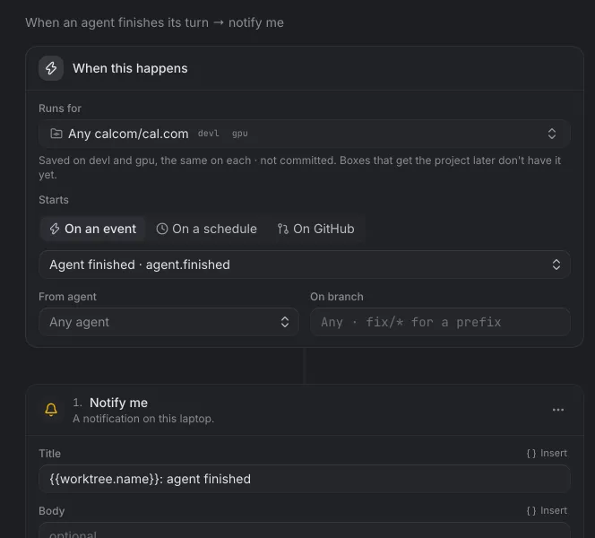
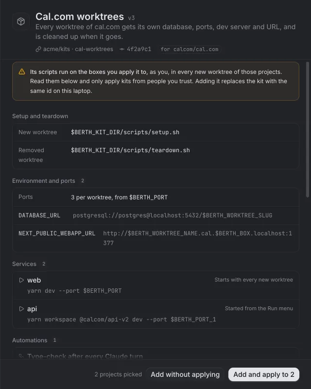
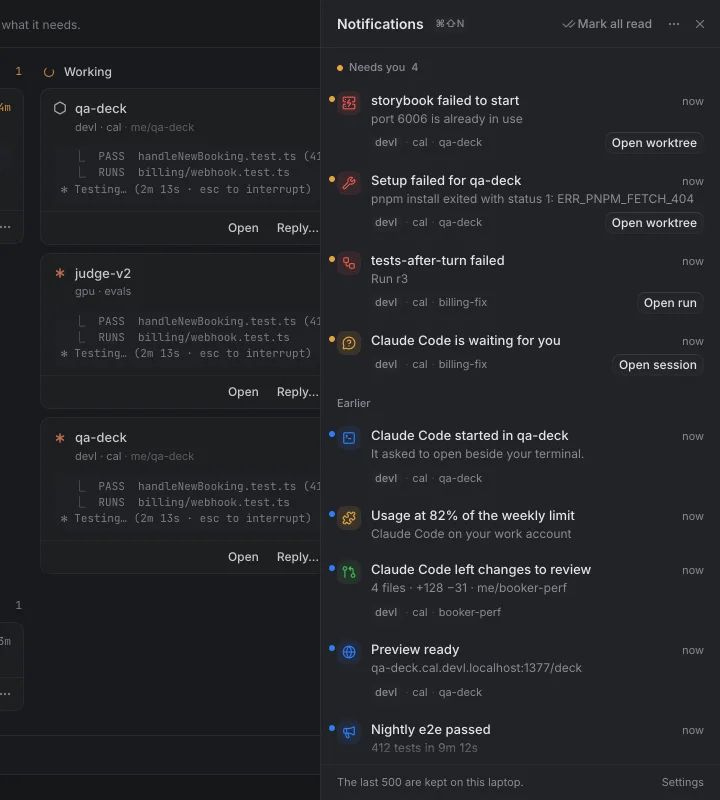
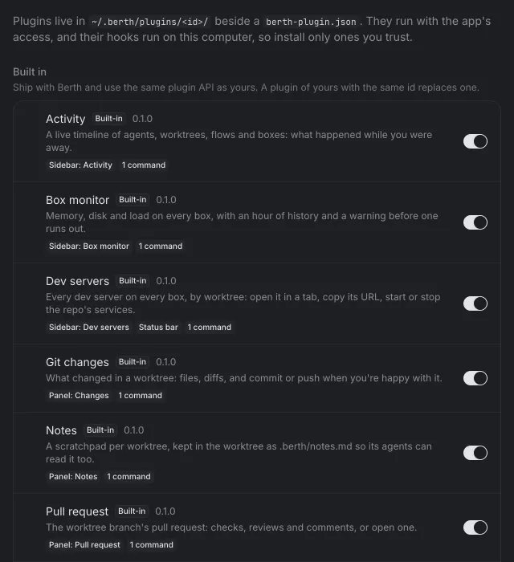

Berth runs Claude Code, Codex and other coding agents on your own dev boxes — a VPS, a cloud VM, the desktop under your desk — and lets you work with them as if they were on your laptop. Close the app, sleep the laptop, lose Wi-Fi: the agents keep going, and the app picks up where they are.
Screenshots are from Berth's demo mode, with invented boxes and repositories.
Every agent on every box, by what it needs.
The dashboard sorts agents into needs you, working, done and ready. Answer a question from its card, send a reply, or open the session; finished work waits in a review inbox. Agent state comes from the agents' own hooks and survives the daemon restarting or upgrading.
Why Berth
Remote boxes, handled properly.
Berth is built for machines you don't sit at. The box serves; the laptop only connects. Nothing is public unless you share it, and nothing stops when you walk away.
Pinned mutual TLS
Every install has an Ed25519 key. Connections are TLS 1.3 with certificates on both sides, and each side accepts only the other's pinned key — never a certificate authority. Pairing is a single-use berth:// link.
On your tailnet
berthd listens on the box's tailnet address only, unless you tell it otherwise. Boxes on a different tailnet are reached through an embedded Tailscale node for that network, with Berth's own TLS on top.
SSH once, at most
berth add ssh me@my-box detects the box's platform, uploads berthd, installs the service and pairs, in one session. After that there is no SSH: everything runs over Berth's own connection.
It upgrades itself
berth upgrade BOX uploads the new daemon over that connection. The box checks it, swaps it in and re-executes in place with the same PID, so the supervisor sees no restart and sessions are untouched.
Sessions that hold
Agents run in Berth's own tmux server. They keep running with nobody attached, through the daemon restarting or upgrading, and through your laptop sleeping or changing networks — the app reattaches and redraws.
Private URLs, no DNS
Every port on a box is at http://3000.devl.localhost:1377/ on your laptop. *.localhost resolves to loopback everywhere, so there's no DNS zone or /etc/hosts edit, and dev servers need no configuration.
Prompts wait for the box
Send to an agent on a box that's out of reach and the laptop can hold the prompt, then deliver it in order once the box is back. It's sent at most once: anything that may have arrived waits for you to retry.
Secrets stay in 1Password
An environment value can be op://vault/item/field. The box reads it when a session or service starts and keeps it in memory only: never on disk, in logs, in events or in a process's arguments. Kits and repo config stay shareable.
How it works
A daemon on every box, one connection from your laptop.
berthd on each box owns the worktrees, sessions and automations. A small agent on your laptop keeps one connection to every box. The app is a view onto both, and holds nothing worth losing.
Your laptop
berth agent · CLI · desktop app
The berth agent keeps one connection to every box and reconnects after sleep or a network change.
It serves private URLs, port forwards and laptop hooks, and runs the embedded tailnet nodes.
The app and the CLI talk to it over a local socket. Close the app any time; nothing drops.
TLS 1.3, mutualpinned keysHTTP/2, one per boxover your tailnet
devl a VPS · berthd
cal/billing-fixclaudeneeds you
cal/qa-deckcodexworking
cal/booker-perfclaudedone
gpu another tailnet · berthd
evals/judge-v2claudeworking
Each box: worktrees, tmux sessions, services, hooks, flows and kits, in one static binary.
The box serves, the laptop connects
Worktrees, sessions, automations and public shares live on the box. Nothing a teammate depends on runs only on someone's laptop.
Agent state from the agents
Claude Code, Codex and Cursor report through their own hooks (berth integrations install). The hooks forward identifiers and paths, never prompts.
Nothing public by default
Sharing a port is opt-in and confirmed in the app. The box runs the tunnel, so a shared link survives your laptop sleeping, and ends when you revoke it.
01 Workspaces
A workspace for every worktree.
Open a worktree and its terminals, splits and browser tabs are together. Terminals are ghostty-web, attached over a WebSocket: closing a tab detaches, and the session keeps running on the box. Each dev server is a tab away at a private URL, and each worktree gets its own ports, environment and services from the repository's .berth/config.json.
02 Worktrees
Worktrees across boxes, with their history.
One table for every worktree on every box: how far it is ahead of and behind its base, uncommitted changes, the last commit, the agents in it and its port. Open one for its commit graph against main, and rebase, pause or open it from there.
Start a worktree from a branch, a pull request, an issue or a link, on the box you choose.
Worktrees made by any other tool, plain git worktree add included, show up and fire events.
Sync several at once; conflicts come back with fixes per worktree.
03 Orchestration
Agents that drive agents.
Prompt a running agent, wait for its turn to end, run a check where it works, loop until the check passes, or hand the work to a fresh agent in a new worktree — from the app, the CLI, a hook, or another agent. Broadcast sends one prompt to many agents across boxes, and can wait for each turn.
Berth's skills teach Claude Code and Codex the same commands, and never to answer another agent's question for you.
04 Automations
Flows that run on the box.
When something happens — an agent finishes or needs you, a worktree is created, a schedule fires, a pull request gets a review comment or a failing check — run steps: commands, prompts, waits, new agents, notifications, webhooks. Flows run on the box, so they keep going while your laptop sleeps.
Run a flow for a project on every box that has it — “Any calcom/cal.com” — and Berth keeps a copy on each.
A flow runs at most 20 times an hour by default, and never twice at once for one worktree.
before: hooks can refuse any action, and an optional resource guard stops idle dev servers when a box runs short of memory.

05 Kits
Set a project up the same way on every box.
A kit packages what a project needs around its code — setup and teardown scripts, environment, ports, services, hooks, flows and agent presets — and travels as a link: a git repository, a folder in one, a gist, or a kit.json. You see everything it does, and every file it carries, before anything is kept or run.
The box's own settings always win, so you can change one value without forking the kit.

06 Notifications
Told when it matters.
Agents waiting for you, failures and finished work go to one notification centre, with a needs-you list that clears itself when the cause does, do not disturb on a schedule, and settings for each kind.
Each box serves a small phone app over your tailnet: see which agents need you and answer them while the laptop is shut.
Push to your phone through ntfy. Notifications name the worktree and box, never what the agent wrote.

07 Plugins
Extend it with plugins.
A plugin is an ES module that adds screens, panels, commands, status bar items and themes, and can carry hooks. The built-ins — git changes, pull requests, dev servers, box monitor, activity, notes — use the same API as yours.
import type { BerthPluginContext } from "@berth/plugin";
export default function activate(berth: BerthPluginContext) {
berth.addCommand({
id: "hello", title: "Say hello",
run: () => berth.notify("Hello", "from a plugin"),
});
}

Open source
Developed in the open, in one repository.
The daemon and CLI in Go, the desktop app in Tauri and React, the built-in plugins and the plugin SDK all live in sean-brydon/berthd on GitHub. Read the design and the security model, or build it yourself.
berthd
The daemon on each box: worktrees, sessions, services, hooks, flows, kits.
berth
The laptop CLI and background agent: connections, private URLs, the app's API.
app/
The desktop app (Tauri, React, coss ui).
plugins/
Built-in plugins, written against packages/plugin-sdk.
There are no releases yet. You need Go 1.27, Node 22 and pnpm, and Rust for the app. Then install berthd on a box over SSH, pair it, and start an agent.
berth help lists every command, and every listing takes --json.
make all # bin/berth, bin/berthd, Linux daemons
bin/berth add ssh me@my-box # install berthd on a box over SSH, and pair
bin/berth location add my-box/app ~/work/app
bin/berth task new my-box/app/fix-login --agent claude --prompt "Fix the login redirect"
cd app && pnpm install && pnpm tauri dev # the desktop app